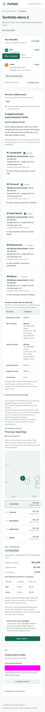

FlatSplit helps 2–5 flatmates compare Singapore towns without hiding one person behind the group average.
CS5224 project · All six authors review before submission · This is not a final deployed-build attestation.
Each flatmate has a personal rent limit.
Different destinations produce different journeys.
Show individual outcomes before the group chooses.
Scope: town-level estimates, equal whole-flat rent split, public transport. No listings, availability guarantee, booking or payments. Source: user-journey.md and API contract.
Create a group, privately share an invite, then each member saves their own destination and limits.
Read actual progress. Preserve inputs during errors. Hide results after preferences change.
Compare three towns, every member’s commute, rent/person and the longest-to-shortest gap.
Implementation artifacts: #84 / #85 and the local integration preparation of #76 / #77. Code and fixture QA are separate from deployed acceptance.

Moto + real local HTTP resolver. Synthetic places/rent and injected conditional route completions. Replace this image with evidence from the final deployed SHA before submission.
Solid boxes: code-defined topology at main b4a4434; not a current runtime inventory. #74 worker and #79 alarms are reviewed PR work, not silently included in that main. Secrets remain server-side. Source: infra/aws/src/{web,api,data}.ts and #39 backend packet.
#67 privacy corrections independently verified at 92a480c: 32 focused tests + 11 local scenarios / 175 calls, as reported in the dated review. This supersedes the earlier “privacy finding open” packet; it is controlled local proof, not deployed/browser acceptance.
Historical whole-flat summaries, equal split, uncertainty and coverage shown. Not an available listing.
Station-to-station estimate for a specified travel basis. Snapping and provider availability limit precision.
Filter every member’s hard limits, then show rent, average commute and commute-gap trade-offs.
Current SearchView lacks rent-publication and per-route update timestamps. “Last response checked” is not data freshness. #75’s latest timestamp correction still needs formal acceptance; no accepted real publication is established by this deck.
| Statement | What we can say now | What it does not prove |
|---|---|---|
| Local correctness | Versioned tests and synthetic HTTP/browser QA; see source ledger. | Real provider, cloud release or participant acceptance. |
| Warm result latency | p95 ≤ 500 ms is the agreed target. | No accepted measured p95 or maximum throughput is claimed. |
| AWS cost | Scenario models and operation-count assumptions exist. | A model is not an AWS bill or measured consumed capacity. |
| User study | #78 protocol/cards prepared; minimum three eligible participants, target 8–12. | No participant session or usability gain is claimed. |
#80 interpreter reproducibility is a numerical correction, not a new cost measurement. Drain arithmetic such as 78 pairs/~28s is extrapolation, never measured throughput.
Use docs/demo/README.md. Local synthetic mode is reproducible now; final demonstration needs the reviewed deployed SHA, known sample inputs, real data/provenance and redacted screenshots from that same build. Never disrupt the shared deployment for a failure demo.
| Member | Implementation/evidence contribution | Proposed presentation handoff |
|---|---|---|
| Raccoon33 / BBQQ | Forms, comparisons, mobile pass, demo, slide coordination | Problem → live journey → final limitations |
| Hikaru | Journey, sharing, status, map, recovery, study | UX choices and user-study limits |
| Mani | Rental pipeline, quality and report coordination | Data lineage and uncertainty |
| Ming | Lookup/worker, operational recovery and cost model | Async routing and modeled costs |
| WK | Persistence/search, correctness, performance/security evidence | Backend invariants and measured-evidence gaps |
| Shyam | Infrastructure, API contracts, filtering/ranking, evaluation synthesis | AWS design and evaluation interpretation |
Speaking order/durations are proposals awaiting all six members’ agreement, not assigned or completed rehearsal.
Final report and slides:
13 November 2026, 23:59 Singapore time.
Use the detailed speaker notes and citation ledger in docs/presentation/README.md. This deck does not imply all-six review, a live study, successful deployment or completed submission.